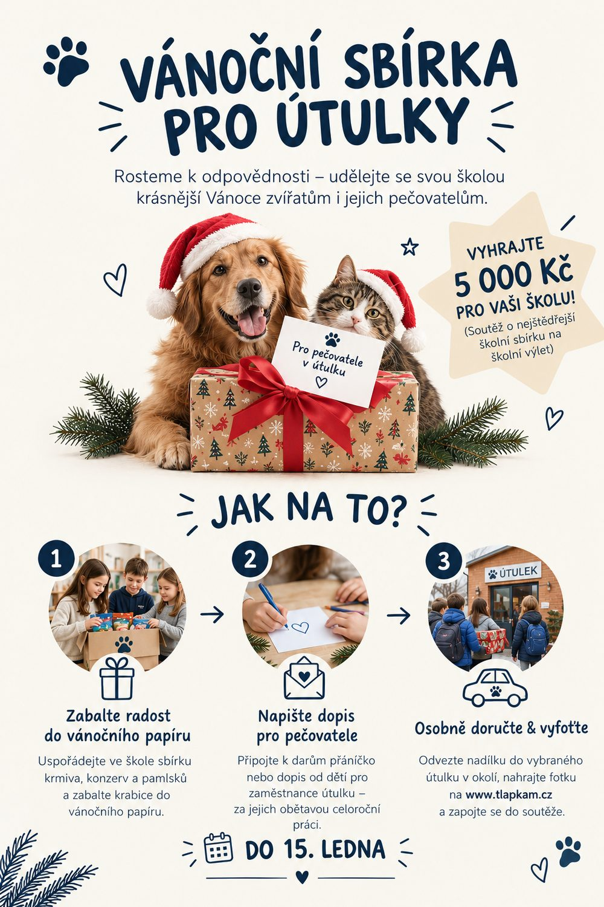
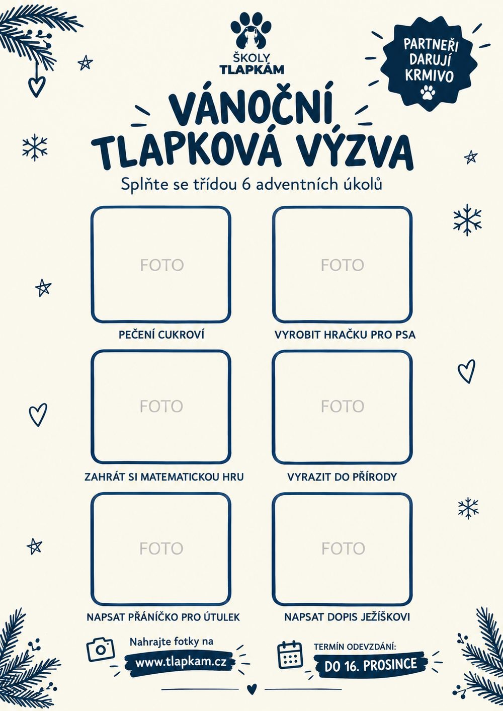

Zapojte svou školu do pomoci zvířatům
Pod projektem Školy Tlapkám máte dvě možnosti, jak se zapojit. Obě jsou zdarma, bez registrace předem a bez zbytečné administrativy.
Vánoční materiální sbírka pro školy
Uspořádejte na své škole vánoční sbírku krmiva a pamlsků pro zvířata v nouzi. Sbírku si organizujete přímo ve škole: stáhněte si naše dokumenty a plakáty, vyberte si útulek ve svém okolí a společně s dětmi mu vybrané pamlsky osobně odvezte.
Jak postupovat:
- V sekci Ke stažení si stáhněte plakát, dopis pro rodiče a cedulky na krabice.
- Uspořádejte sbírku ve škole a vyberte si útulek ve svém okolí.
- Společně s dětmi sbírku osobně odvezte a vyfoťte.
- Vyplňte formulář a nahrajte fotku vaší sbírky. Tím se zapojíte do soutěže.

Vánoční tlapková výzva
Nemáte v okolí útulek, kam byste mohli sbírku osobně odvézt? Nevadí! Zapojte se do naší Vánoční tlapkové výzvy. Stačí si stáhnout náš úkolníček / To-Do list, splnit se třídou 6 zábavných adventních úkolů přímo ve výuce a do 16. prosince nahrát fotky ze splněných úkolů na náš web. Za každý splněný list pošlou naši partneři vybranému útulku balíček pamlsků a krmiva.
Jak postupovat:
- V sekci Ke stažení si stáhněte To-Do list s 6 adventními úkoly.
- Splňte úkoly se třídou přímo ve výuce a foťte průběh.
- Do 16. prosince nahrajte vyplněný To-Do list nebo fotky přes formulář „Máme hotovo!".
